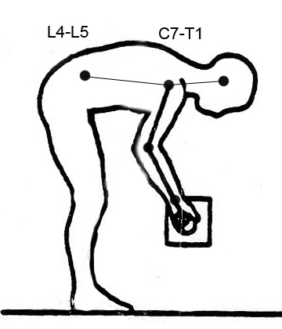
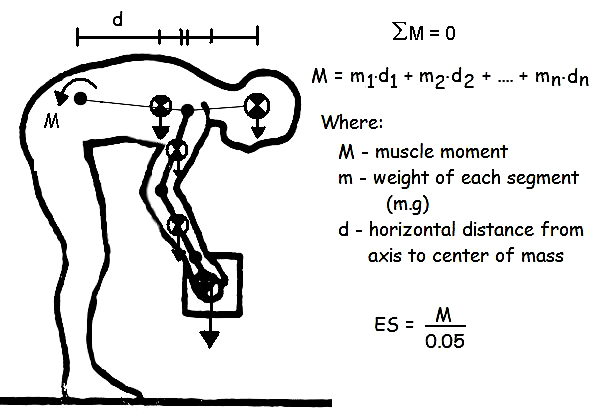
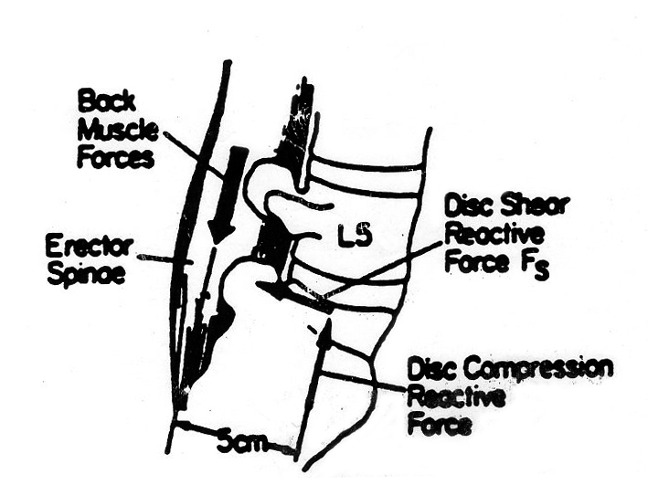
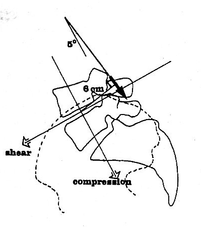
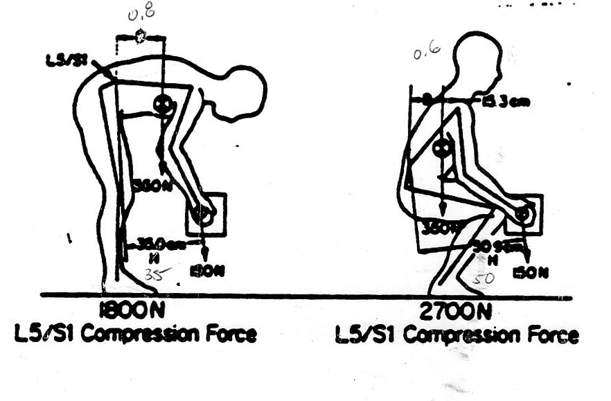

Occupational Biomechanics
Prevention of Low Back Pain:
- Sagittal plane model
The most common method of biomechanical analysis of heavy lifting and manual material handling is to use a sagittal plane model of the human body and assume static equilibrium to calculate joint moments and compression of the spine at the L5-S1 joint. We also assume static equilibrium which may seem like an over-simplification and the equations of dynamic equilibrium would be more appropriate. While it is true that lifting tasks are dynamic, the accelerations are quite low when the load is high and therefore, the equations of static equilibrium yield values that are very close to those of dynamic equilibrium. In addition, the data collection of a static analysis is much easier and has produced a large database from which risk factors could be calculated.
The free body diagram below was generated from a scaled image of a worker at one point in the lift. All that is required is a still picture of the posture scaled to life size and some anthropometric data of the worker. For a review of drawing free body diagrams and solving equations of static equilibrium, see (Static Equilibrium). For a review of using anthropometric data tables and locating centers of mass, see (Anthropometry).

-Solving for the sum of the moments yields the required muscle force of the Erector Spinae to maintain the posture. The muscle force can be resolved into two rectangular components of shear and compression assuming the force is approximately 5 degrees from perpendicular to L4-L5 joint (see figure below).

Shear and Compression Forces:
 
Stoop vs Squat lift

- tissue tolerance controversy
- Intra-Abdominal Pressure Controversy:

It was originally proposed by Bartelink in 1957 that increased intra-abdominal pressure would decrease the compressive load on the spine through the intra-abdominal balloon mechanism. To begin with, you must think of the abdominal cavity and the abdominal organs as a squishy liquid. Then realize that the abdominal cavity becomes a closed chamber when we bear down and hold our breath, which we instinctively do when we lift heavy things. This chamber is closed on the bottom by the anal sphincter and on the top by the diaphragm. When bearing down, the abdominal contents tend to push outwards. But if we contract our deep abdominal muscles (obliques and the transverse abdominus muscles) or we wear a thick belt, the abdominal contents are forced upwards rather than outwards. This theoretically provides a decompressive effect on the lumbar spine. Since the crura of the diaphragm is attached to the first 3 lumbar vertebrae, when the diaphragm is pushed upwards, it exerts a traction force on the lower lumbar spine (L4 and L5). It was also theorized that since this balloon mechanism makes the spine more rigid, it would decrease the amount of work required of the erector muscles to prevent us from falling forwards. Kapanji estimated that this abdominal support mechanism acts to reduce compression forces on the L5/S1 disc by 30% and reduces the force required by the erector spinae muscles by 55%. But more recent scientific evidence fails to support some of these theoretical assumptions. Such recent studies reveal that an increase in intra-abdominal pressure actually results in an increase (rather than a decrease) in compressive force on the lower spine.(5,6) And there is no decrease in the amount of work required of the lower back muscles.(7) However, by stiffening the trunk, increased intra-abdominal pressure may prevent the tissues in the spine from strain or failure from buckling. Such intra-abdominal pressure may also act to reduce anterior-posterior shear loads.(8) In other words, support for the spine is provided, without reducing compression to any appreciable degree. Belts may also help to protect the spine by limiting the range of motion that occurs when bending or twisting, though this effect is less than expected.(9,10)
-NIOSH action limit for lumber compression = 3400 N maximum permissable lift = 6400 N
- epidemiology shows that AL has 3 times the risk and MPL has 8 times the risk of developing low back pain
-NIOSH modification http://www.cdc.gov/niosh/docs/94-110/
However, since when the spine bends more, it is more vulnerable to injury, if these belts reduce extreme bending at all, they may be beneficial.
Are
there any risks associated with wearing a
back belt?
The main risk
associated with wearing a back belt is that during the period of
wearing it, the supportive spinal muscles—the deep abdominal
and
back muscles—that normally support your spine will become
weaker.
These muscles are less active
while your spine
is being artificially supported by the belt. Muscles
need to be consistently exercised in order to stay strong.
If these muscles become
weaker, when you stop wearing the belt,
you may be more likely to hurt your back. And
at least one study seems to suggest this. In
this study, there was an increase in the number and severity of back
injuries following a period of belt wearing.(11)
Another risk
associated with wearing a back belt is that it causes an increase in
both blood pressure and heart rate.(12) This
may pose a problem for those individuals with existing cardiovascular
disease or risk factors, such as hypertension.
A third risk
associated with wearing a back belt is that workers may be inclined to
lift heavier objects while wearing them. These
belts may be giving workers a false sense of security.
This could result in an
increased risk of injury.
Should you wear a belt to support your back
and
prevent injury?
My recommendation
is that you should wear a supportive belt only for the first few days
or weeks after a severe back injury while the area is healing or only
during the lifting of very heavy objects. If you have never had a back
injury, I would avoid a belt entirely. It
is more important to focus on using proper form and posture when
bending and lifting and even sitting, and to perform conditioning
exercises regularly to keep your trunk muscles strong.
Before requiring
all your workers to wear back belts, it would be better to have a
comprehensive ergonomic assessment of the work stations to see what can
be done to reduce overloading the spine while at work.
Workers should be educated
about how the tissues of the spine
become injured, proper lifting mechanics to minimize such strain, and
what to do when feeling back discomfort prior to a severe injury
occurring.
All workers should be
encouraged to engage in a regular fitness program, to lose weight if
heavy, and to avoid smoking.
REFERENCES:
- Wassell JT, Gardner LI, Landsittel DP, Johnston JJ, Johnston JM. A prospective study of back belts for prevention of back pain and injury. JAMA. 2000; 284(21): 2727-32.
- McIntyre DR; Bolte KM; Pope MH. Study
provides new
evidence of back belts' effectiveness. Occup
Health Saf.
1996; 65(12): 39-41.
- Bartelink DL, "The Role of Abdominal
Pressure in
Relieving Pressure on the Lumbar Intervertebral Discs," J
Bone
Joint Surg, (Br) 1957, 39B:
718-725.
- Kapanji, IA. The Physiology of the Joints,
Vol.
III.
- McGill SM, Norman RW. Reassessment of the role of intra-abdominal pressure in spinal compression. Ergonomics. 1987; 30: 1565-1588.
- Nachemson AL, Anderson GBJ, Schultz AB. Valsalva maneuver biomechanics. Effects on lumbar spine trunk loads of elevated intrabdominal pressures. Spine. 1986; 11: 476-479.
- McGill S, Norman RW, Sharatt MT. The effect of an abdominal belt on trunk muscle activity and intra-abdominal pressure during squat lifts. Ergonomics. 1990; 33:147-160.
- McGill S. Abdominal belts in industry: A position paper on their assets, liabilities and use. Am Ind. Hyg. Assoc. J. 1993; 54(12): 752-754.
- Lantz SA, Schultz AB. Lumbar spine orthosis wearing I. Restriction of gross body motion. Spine. 1986; 11: 834-837.
- McGill SM, Sequin JP, Bennett G. Passive stiffness of the lumbar torso in flexion, extension, lateral bend and axial twist: The effect of belt wearing and breath holding. Spine. 1994; 19(19): 2190-2196.
- Reddell CR, Congleton JJ, Huchinson RD, Mongomery JF. An evaluation of a weightlifting belt and back injury prevention training class for airline baggage handlers. Appl. Ergonomics. 1992; 23: 319-329.
- Hunter GR, McGuirk J, Mitrano N, et al. The effects of a weight training belt on blood pressure during exercise. J Appl Sport Sci Res. 1989; 3: 13-18.
.
Overuse Injuries:
Tasks that are highly repetitive often lead to overuse injuries. Quite often the forces seems so small and insignificant that care is not taken with regard to how the tasks are performed. Poor posture can lead to such a situation as well as nerve impingement. Everybody has experienced a foot or hand that has "fallen asleep" while resting which is caused by not realizing that a blood vessel has been compressed. Similarly, light work can lead to injury by not realizing that the task has negative effects on muscle and nerve. The next section looks at carpal tunnel syndrome as an example of an upper extremity overuse injury.